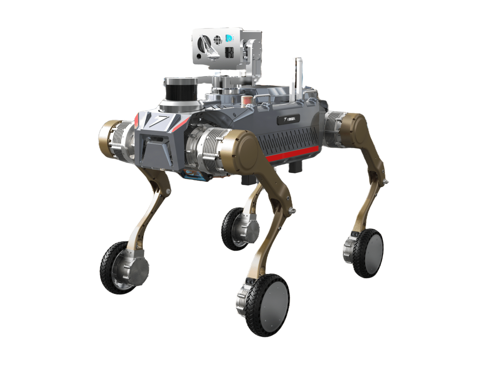

Explosion-Proof Four-Legged Robot X5
A quadruped robot from China.
Sources retrieved: 29 September 2026 (A)
- Status
- In production
- Applications
- Indicative price
- Not stated
- Intended use, per the manufacturer
- The X5 can be widely used in industries such as petroleum, chemicals, natural gas, steel and baijiu, carrying out unmanned reconnaissance, inspection and similar work.Source and note: Intended use, per the manufacturerA sevnce.com/detail?id=72 · Retrieved 29 September 2026

- Person
175 cm68.9 in - 120 cm47.2 inHeight
95 cm37.4 in
Manufacturer's rendering.
Drawn at one scale next to a 175 cm person, from the figures the maker states: height 95 cm and length 120 cm.Drawn at one scale next to a 68.9 in person, from the figures the maker states, converted to inches: height 37.4 in and length 47.2 in.
Specifications
14/33 specifications disclosed 19 not stated
19 fields hidden
How to read the figuresShow guideClose
Not statedThe manufacturer states nothing about this field.NoStated: the robot does not have this.A marker with an asterisk (*) also carries a caveat.
Select a source marker for source details and notes.
Physical11/14 disclosed
Power2/5 disclosed
Sensing and autonomy1/6 disclosed
Payload and expansion0/3 disclosed
Commercial0/1 disclosed
Compliance & certifications0/4 disclosed
Against the field
Each strip holds every robot of this type in the guide that states the figure, one bar per group of values. Further right means a larger figure, not a better robot.
Height
at most 95cmat most 37.4inOur conversion from 950 mm. The manufacturer does not state an imperial figure itself, so the conversion has no source of its own.
89 quadrupeds state a height
Explosion-Proof Four-Legged Robot X5 states an upper limit, not one figure, so it is shown open-ended and not ranked against the others.
Weight
at most 125kgat most 276lbOur conversion from 125 kg. The manufacturer does not state an imperial figure itself, so the conversion has no source of its own.
126 quadrupeds state a weight
Explosion-Proof Four-Legged Robot X5 states an upper limit, not one figure, so it is shown open-ended and not ranked against the others. Log scale: each step along the axis multiplies the value.
Runtime
at least 120minNote: load condition not stated
106 quadrupeds state a runtime
Explosion-Proof Four-Legged Robot X5 states a lower limit, not one figure, so it is shown open-ended and not ranked against the others.
Max speed
at most 7.2km/hat most 4.47mphOur conversion from 2 m/s. The manufacturer does not state an imperial figure itself, so the conversion has no source of its own.
115 quadrupeds state a top speed
Explosion-Proof Four-Legged Robot X5 states an upper limit, not one figure, so it is shown open-ended and not ranked against the others.
Notes
The page gives the drive type as wheel-legged (translated from the Chinese).
It cruises on wheels on flat roads and switches to a legged posture for steps, pipe-gallery ramps and uneven ground (translated from the Chinese).
The page carries an “order now” button (translated from the Chinese).
Sources
One line per source, not per figure: a source has one retrieval date.
- Asevnce.com/detail?id=72Main source. Retrieved 29 September 2026
More robots
Same manufacturer
All robots from Sevnce Robotics